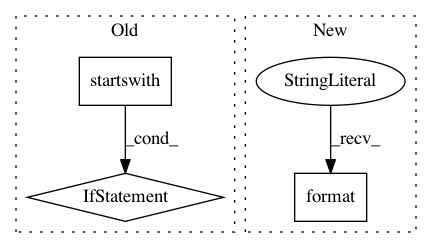

ef3c4f54d0a80e78f958bf5905313a41df6f196d,src/python/pants/backend/jvm/tasks/jvm_compile/zinc/zinc_compile.py,BaseZincCompile,_verify_zinc_classpath,#Any#Any#,322
Before Change
for path in classpath:
if not os.path.isabs(path):
raise TaskError("Classpath entries provided to zinc should be absolute. " + path + " is not.")
if os.path.relpath(path, pants_workdir).startswith(os.pardir):
raise TaskError("Classpath entries provided to zinc should be in working directory. " +
path + " is not.")
if path != os.path.normpath(path):
raise TaskError("Classpath entries provided to zinc should be normalised (i.e. without ".." and "."). " +
path + " is not.")
After Change
raise TaskError("Classpath entries provided to zinc should be in working directory or "
"part of the JDK. {} is not.".format(path))
if path != os.path.normpath(path):
raise TaskError("Classpath entries provided to zinc should be normalized "
"(i.e. without ".." and "."). {} is not.".format(path))
def log_zinc_file(self, analysis_file):
self.context.log.debug("Calling zinc on: {} ({})"
In pattern: SUPERPATTERN
Frequency: 3
Non-data size: 3
Instances
Project Name: pantsbuild/pants
Commit Name: ef3c4f54d0a80e78f958bf5905313a41df6f196d
Time: 2016-05-12
Author: benjyw@gmail.com
File Name: src/python/pants/backend/jvm/tasks/jvm_compile/zinc/zinc_compile.py
Class Name: BaseZincCompile
Method Name: _verify_zinc_classpath
Project Name: markovmodel/PyEMMA
Commit Name: f51387e15daaeb04ae4438bfd88446534ce663ae
Time: 2017-09-15
Author: clonker@gmail.com
File Name: pyemma/_base/serialization/jsonpickler_handlers.py
Class Name: NumpyExtractedDtypeHandler
Method Name: flatten
Project Name: lingpy/lingpy
Commit Name: 127afd28b2e77223934023f316c1b574ccdf826f
Time: 2014-02-20
Author: mattis.list@posteo.de
File Name: lingpy/convert/html.py
Class Name:
Method Name: alm2html